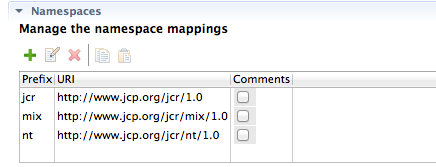

|
|
ModeShape Tools - CND Editor |
The CND Editor's Namespaces Table displays the namespace mappings contained in the CND file. A namespace mapping can be created or edited using the Namespace Editor.
Here is what the Namespaces Table looks like:
The namespace mapping's prefix, URI, and a comment indicator is displayed in the table. The table's toolbar contains buttons that do the following:
| Add Namespace | opens the Namespace Editor which allows you to add a new namespace mapping to the CND |
| Edit Namespace | opens the Namespace Editor which allows you to edit the selected namespace mapping |
| Delete Namespace | deletes the selected namespace mapping from the CND |
| Copy Namespace | copies the selected namespace mapping to the system clipboard |
| Paste Namespace | pastes into the CND the namespace mapping from the system clipboard |
Copied namespace mappings can be pasted into the same CND editor or into a different CND editor.